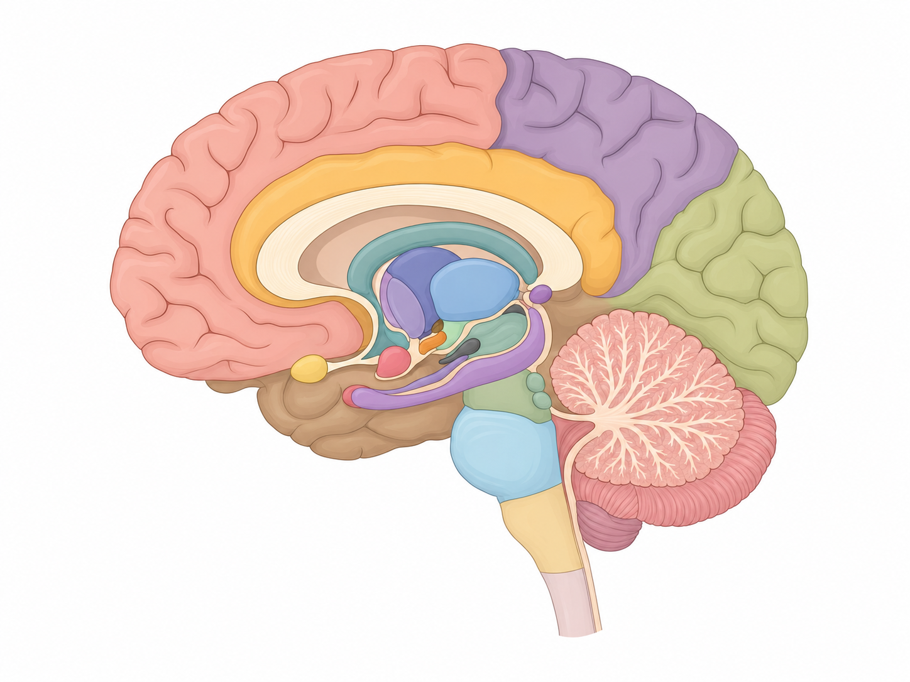

Los números que laten aún no los has explorado. Activa Modo enfoque para atenuar todo menos la región elegida.
Toca cada número del cerebro para abrir su ficha. Una región a la vez, en pasos cortos — pensado para estudiar sin saturarte.

Los números que laten aún no los has explorado. Activa Modo enfoque para atenuar todo menos la región elegida.
Repaso relámpago: término → idea clave.